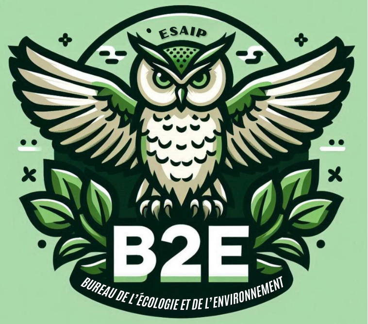

Le Bureau de l'Ecologie et de l'Environnement
Me retrouvant dans la vision du bureau de l'Ecologie et de l'Environnement, j'ai rejoint l'association pendant 2 ans au sein du pôle communcation. Mes missions consistaient à réaliser les supports de communication et à les poster sur les divers réseaux sociaux.

Bureau de la Musique
Etant moi-même musicienne et chanteuse depuis mon plus jeune âge, il m'a semblé évident de rejoindre ce club dont je suis la secrétaire depuis cette année. Mes tâches sont diverses, allant de la communication, à l'organisation d'évènements en passant par l'installation de la scène et les comptes-rendus de réunion.